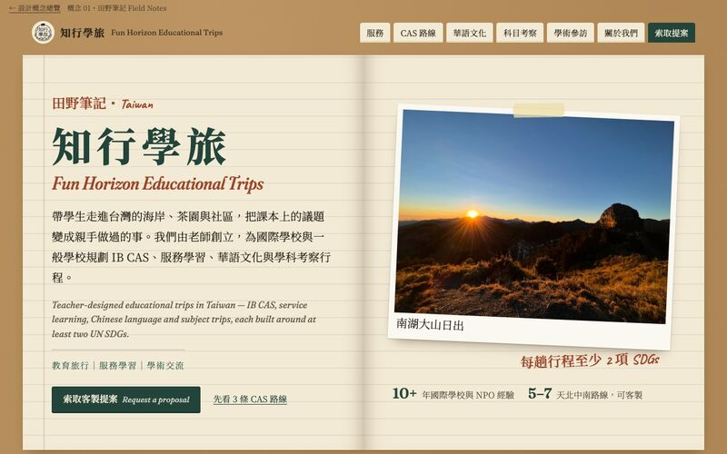
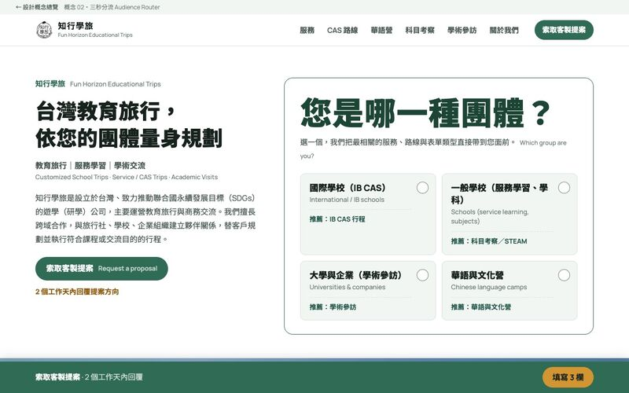
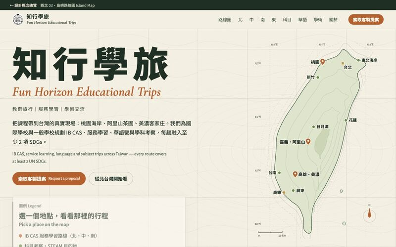
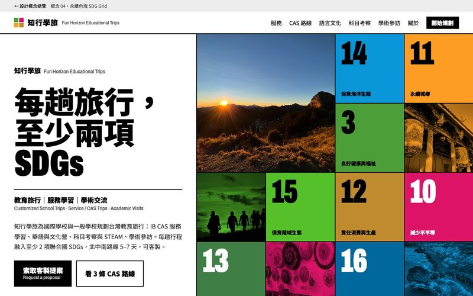
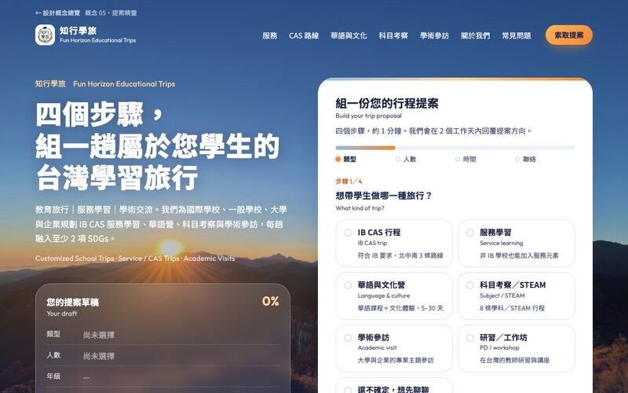

五個概念共用同一份內容（data/content.json，原站文字加上 11 張圖片轉寫）、同一套 SEO 與詢價表單欄位，差別只在版面敘事和 CTA 的做法。這是設計討論稿，表單目前還沒有接後端。

老師的旅行筆記本：牛皮紙、襯線字、拍立得照片。用溫度建立信任。

先問「您是哪一種團體？」，讓 IB 學校、一般學校、大學企業、華語營 3 秒內找到自己的那一頁。

亮色大地森林色的台灣路線圖，點選地圖上的點就能看路線。北中南東的所有行程一目了然。

瑞士網格搭配 SDG 官方色，把「每趟至少 2 項 SDGs」做成品牌識別。

首頁本身就是配置器：一步一步組出一趟學習旅行，旁邊即時顯示提案草稿和符合的行程。